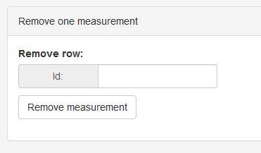
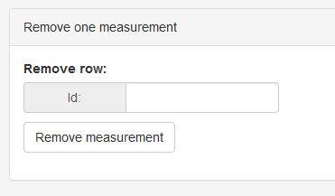

Trends¶
The trends module lets you display stored measurements in graphical or tabular form. The diagram is plotted with plotly.js, and the table is displayed with tabulator.js.
Module, Test type and Parameters are fixed. Storing new measurements will not change them. On the other hand, Machine, Beam, Phantom, Size and Angle will grow with new measurements.
If you wish to display measurements in a certain time interval, define start and end dates. End date may be empty.
Time and date are recorded at image acquisition, not when you save the data.
If you are logged in as administrator, you can delete one measurement with the form at the bottom of the page. Just enter the id of the row you would like to remove and click Remove measurement.
 
